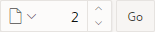
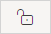
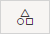
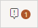

9.2.1 Page Designer Toolbar
The Page Designer toolbar displays at the top of the page and contains both buttons and menu options. Passing your cursor over an active button and menu displays a tooltip.
Tip:
You can view an online summary of how to use Page Designer. View a page in Page Designer, click the Help menu at the top of the page, and select Getting Started with Page Designer.
The Page Designer toolbar features the following buttons and menu options.
Page Selector
The Page Selector displays the current page. Click the down arrow (labeled Page Finder) to search for pages. Alternatively, enter a page number in the field and click Go. To navigate to the previous or next page, click Navigate to Next Page (up arrow) and Navigate to Previous Page (down arrow).
See Also:
Page Unlocked and Page Locked
Indicates the lock status of a page. Page Unlocked indicates the current page is unlocked and editable. Page Locked indicates the page is unavailable for editing. The appearance of the padlock icon changes depending upon the lock status:
-
Clear unlocked padlock — Indicates the page is unlocked.
-
Green locked padlock — Indicates the page is locked by you.
-
Red locked padlock — Indicates the page is locked by another user. To view the lock owner, or update the lock comment, click the red packlock.
See Also:
Undo and Redo
Applies to actions that result in a change to the page data. Undo reverts the previous update you made within Page Designer. Redo reapplies the last update that was undone using Undo.
Create
Features a graphical plus sign (+). Create menu options include:
-
Page. Access to the Create Page Wizard. See "About Creating New Pages."
-
Page as Copy. Access the Copy Page Wizard. See "Copying a Database Application Page."
-
Page Component. Provides a summary of how to create page components in Page Designer.
-
Form Region. Access to the Create Form Region Wizard. See "Creating a Report and Form Using the Create Page Wizard."
-
Breadcrumb Region. Access to the Create Breadcrumb Wizard. See "Creating Breadcrumbs" and "Creating a Breadcrumb Region Using the Create Breadcrumb Wizard."
-
Shared Component. Access to the Create Application Component Wizard. Shared components are common elements that can display or be applied on any page within an application. See "Managing Shared Components."
-
Page Group. Links to the Page Group page. Use page groups to organize pages. See "Creating Page Groups."
-
Developer Comment. Access the Developer Comments dialog. Developers can add comments to an application, a page, or a group of pages. See "Adding Developer Comments."
-
Issue. Create a new issue in Team Development. See "Creating an Issue."
Utilities
Features a graphic of a wrench. Utilities menu options include:
-
Delete Page. Delete the current page. See "Deleting Pages."
-
Advisor. Access Oracle Application Express Advisor (Advisor). Use Advisor to check the integrity and quality of your Oracle Application Express application. See"Running Advisor to Check Application Integrity."
-
Caching. Links to the Caching page. Enabling caching is an effective way to improve the performance. See "Utilizing Region Caching in Page Designer."
-
Attribute Dictionary. Access the Attribute Dictionary. See "Using the Attribute Dictionary."
-
History. Displays a report of changes to the current page.
-
Export. Export the current page. See "Exporting an Application and Application Components."
-
Cross Page Utilities. Access Cross Page Utilities. See "Accessing Cross Page Utilities."
-
Application Utilities. Access Application Utilities. See "Using Application Utilities."
-
Page Groups. Links to the Page Group page. Use page groups to organize pages. See "Creating Page Groups."
-
Upgrade Application. Upgrade an existing application. See "Running Upgrade Application."
-
Show Tooltips. Includes the following options:
-
Tooltips. Disable and enable tooltips within the UI.
-
Component View. Disable or enable the Component View tab in the central pane of Page Designer. See "Component View Tab."
-
Layout View. Disable or enable the Layout tab in the central pane of Page Designer. See "Layout Tab."
-
-
Layout. Controls the number of panes that display in Page Designer. See "Switching Between Three Pane and Two Pane Mode."
Shared Components
Links to the Shared Components page. Shared components can display or be applied on any page within an application. See "Managing Shared Components."
Show Messages
When you add a new component to a page, Page Designer indicates what actions are required next. The Show Messages icon only displays if there is an error. Click the Show Messages icon to view a dialog listing all the errors. Select an error to highlight the associated attribute in the Property Editor.
Save and Save and Run Page
Click Save to save the current page. Click Save and Run Page to save and then run the current page. See "Running a Page from Page Designer."
Parent topic: Understanding Page Designer UI Elements